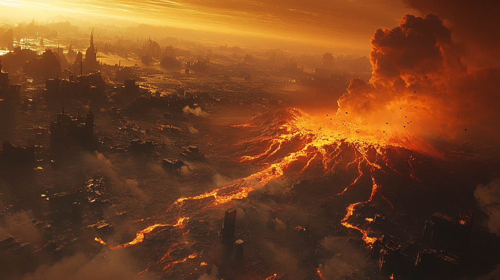
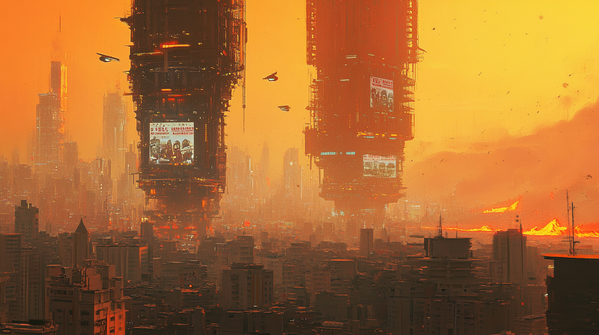
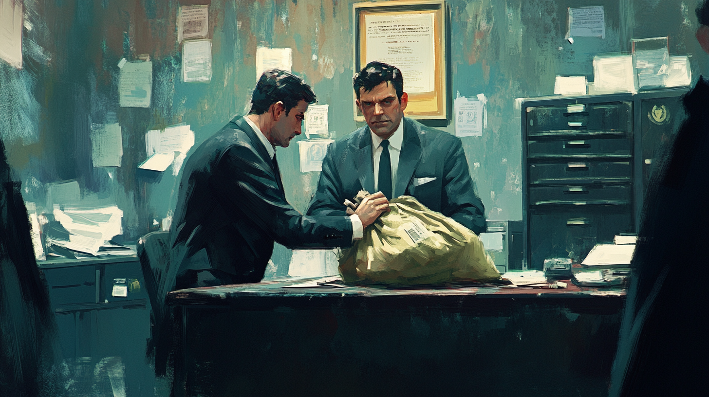
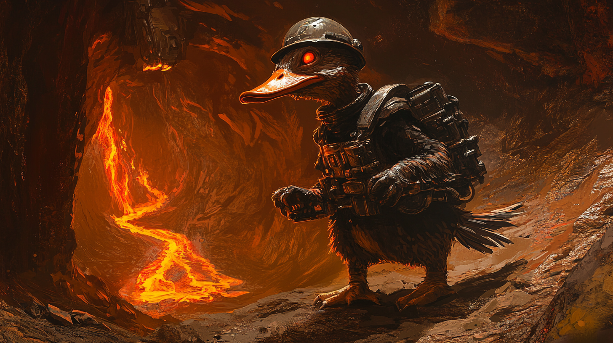
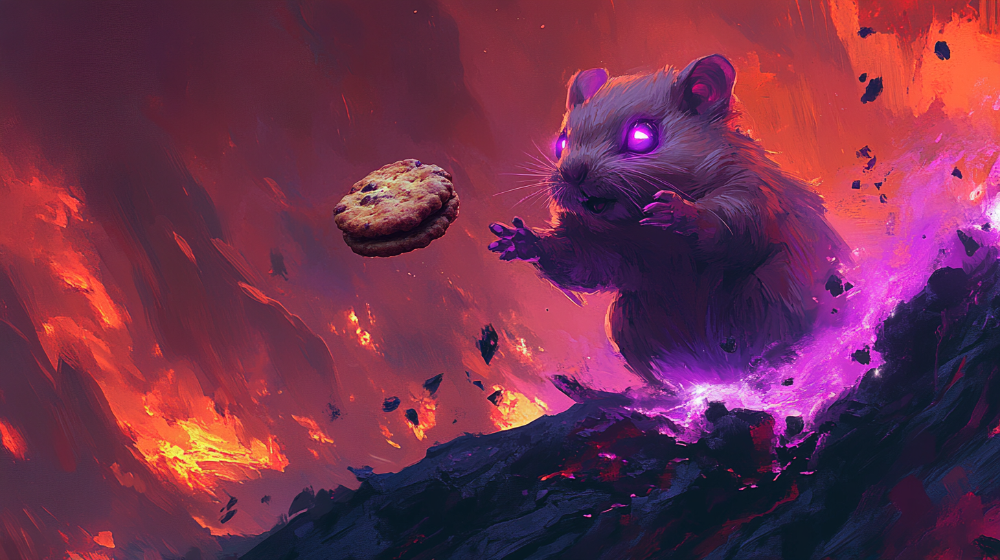
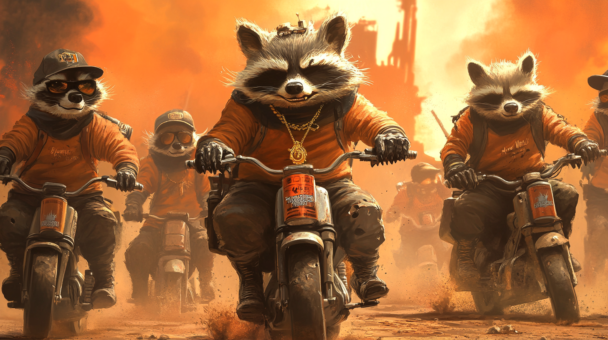
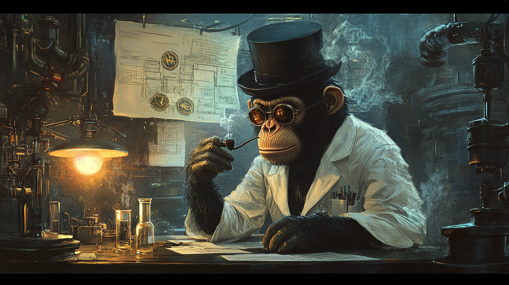
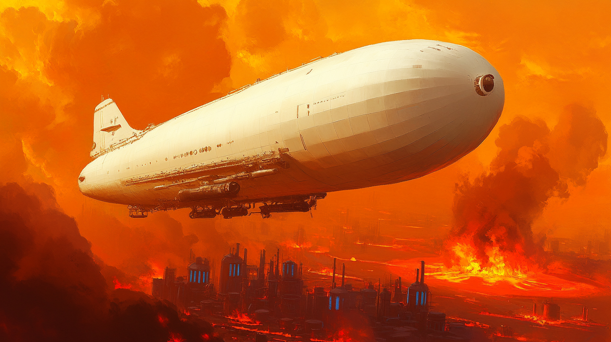
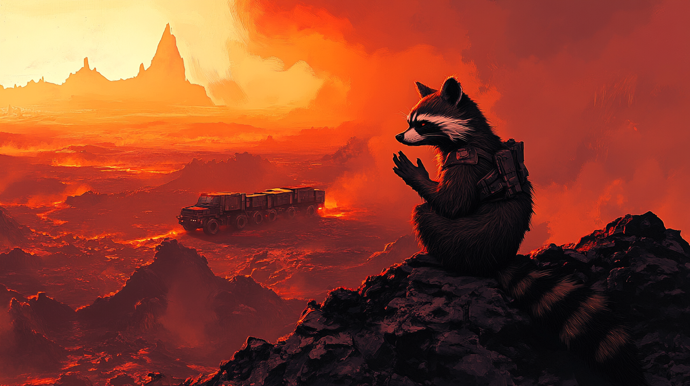

Field Briefing — Classified: New Arrivals
Year 2334. Planet Gunmetal.
A dying world. An abandoned colony. The most valuable magma-ore deposits in the known sector — and nobody who should be in charge of it.
Before the collapse, Gunmetal was the mining capital of the Great Space Empire: a planet with fast-moving magma flows regularly depositing rich veins of exotic ore in unpredictable new locations, with competing corporations willing to do increasingly creative things to each other to reach those veins first. Sabotage. Planted explosives. Hiring mercenaries. Then hiring better mercenaries to deal with the first set of hired mercenaries that had gone rogue. By the time the jump lanes failed and the Great Space Empire quietly stopped answering its mail, Gunmetal was already the most heavily armed mining colony in the sector.
The Empire's departure didn't stop the flow of money. It just stopped people abiding by the rules that regulated it.
What remained: the ore, the corporations, the guns, and G.U.N. — the Gunmetal United Nations, the planetary authority that once held everything together, now mostly held together by its own corruption. The mines still flow. The factions still fight. The main difference is that now Gunmetal's mercs can no longer import their weapons — they have to reverse-engineer and manufacture them from whatever they can dig out of the ground, before their rivals do. And now, of course, there's no one left to tell them not to use what they build against each other.

Someone has to become king of the ashes.
Territorial Survey — Zones & Hazards
Planet Gunmetal — A Field Guide (For Survivors)
The planet divides neatly into two zones, which is the only neat thing about it.
The Safe Zone sits at the centre of the map — patrolled, taxed at 25% by G.U.N., and home to the surviving city-states and most of the people who still have all their original limbs. The ore here tops out at Tier 2. Perfectly adequate. Perfectly uninspiring.
The Badlands is everything else. Ash deserts. Volcanic plains. The ruins of city-states that didn't make it. Tier 3 through Tier 5 ore deposits, which means more wealth than you've ever seen and less law than you've ever experienced. The Badlands is where fortunes are made, convoys disappear, and the definition of "acceptable risk" gets renegotiated by everyone involved at least twice per trip.
The air, incidentally, is kept breathable by a network of Atmospheric Processors. They are owned by G.U.N.
Coincidentally, nobody attacks G.U.N. directly.
(This is not a coincidence.)

G.U.N. — The Gunmetal United Nations
"One World GUNvernment."
Classification: Public Record • Distribution: Mandatory
G.U.N. was once a respectable, functioning planetary authority. That was a long time ago.
Today, G.U.N. still claims legal sovereignty over every miner, mercenary, and sentient raccoon on the planet. It still issues contracts. It still has a 25% Corruption Tax on every transaction in the Safe Zone and a 40% Import Tariff on anything coming in from the Badlands. What it no longer has is the military power to enforce any of this — which it explains as "an intentional policy of deregulation and laissez-faire governance." Everyone can see through this. G.U.N. adopted the language of libertarian policy to disguise the fact that it is being ignored by people with bigger guns than it has.
The bribes flow upward. The pardons flow downward. The contracts pay poorly. The Corruption Tax is, by all definitions, a real tax collected by a fictional government — which is arguably an improvement on most government taxation systems.
G.U.N. has one unchallengeable lever of power: the Atmospheric Processors. Nobody dares risk the air. This is the most effective governance strategy on Gunmetal, and it was discovered by accident when an idiot intern mistakenly turned it off for five minutes. 5,000 people died that day. The planet, not realising it was an accident, thought it was done to serve as a demonstration of the power G.U.N. wielded. The corporations began paying their corruption taxes on time after that. That intern has since been promoted to head of city state regulations committee #24 — far away from the Atmospheric Processors power switch.
Xenobiological Survey — Classified: Incomplete
The Locals — A Complete and Mostly Accurate Guide
Gunmetal is home to humans, and also to several things that the Space Empire's genetic engineering division created and then immediately stopped taking responsibility for.

The Ducks
Three to four feet tall. Dual weapon hardpoints (one per wing... hand... thing). Berserker fury response activated by stress, mockery, or the general injustice of being consistently underestimated in a combat environment where small stature is a tactical advantage that everyone is somehow surprised by every single time.
The Anthropomorphic Ducks were engineered as a general-purpose industrial workforce. The berserker fury was listed as a design flaw. The Ducks have since produced spreadsheets demonstrating that it is, in every measurable metric, a competitive advantage, and they have submitted these spreadsheets to several G.U.N. oversight committees. They have not responded.
Unfortunately for them, it turns out beaks were not evolved particularly well for speaking English. The genetic engineers logged it as a known issue and filed it under 'acceptable'. As a result they speak with a sibilant lisp — the S-sound consistently rendered as TH, which becomes more pronounced under emotional intensity, which means the moments of greatest fury are also, unfortunately, the moments of greatest comedic potential. The Ducks are aware of this. They find it less funny than everyone else does.

The Psychic Space Hamsters
Nobody knows why the Space Empire gave hamsters psychic powers. The historical record offers no explanation. It is one of the great unanswered questions of Gunmetal's colonial history, alongside "what was the Great Space Empire's actual name?" and "was the raccoon project really a good idea?"
The answer, in all three cases, is: it doesn't matter anymore.
There are two kinds of Psychic Hamster on Gunmetal. The Cultivated variety have, over decades of gentle background psychic influence, instilled a planet-wide cultural conviction that producing biscuits and giving them to hamsters is correct and good. They decline to make any direct claims about the extent of their influence. They sit on Boards of Directors. They advise military campaigns. They manage a planet-wide Biscuit Economy as what they describe as "an aligned incentive structure," which is technically accurate and deliberately incomplete.
The Wild Hamsters live in the deep Badlands, have renounced biscuits, and are seeking something their domesticated counterparts would describe as "an alarming waste of psychic potential." The Wilds call it ascension. The Domesticated hamsters have not raised it in any Board meeting.

The Raccoon Biker Gangs
They were meant to be mechanics.
The design brief was reasonable: create a dexterous, hands-on maintenance underclass who could build machines, fix machines, and keep machines running under industrial conditions. The Empire noted raccoons' natural aptitude for fine manipulation, their comfort in confined spaces, and their apparent compulsion to disassemble anything within reach. These seemed like useful traits.
The Empire was correct about all of them. It failed to think through the implications.
Within months of successful uplift, it had become obvious the project was a failure and needed to be terminated. The raccoons were too... anarchistic. After the decision to erase the test subjects had been reached (and before it could be implemented), the research subjects had reverse-engineered the lock mechanisms on their enclosures, disassembled two research vehicles for parts, assembled something from those parts that the lead scientist later described as "a functional if terrifyingly unsafe mode of transport" and left. Not escaped. Left. There is a difference. On the way out, they rearranged the pending extermination documentation into a small paper sculpture of a rude gesture.
They are now the finest practical mechanics on Gunmetal — except for the fact that they will not fix your vehicle. They may, however, steal it, modify it beyond recognition, and ride it until the engine explodes — which they consider the highest possible tribute to a well-built machine.
They divide into roaming biker gangs that cause trouble for anyone they encounter. They have numerous styles — Mod, Rocker, Goth, Punk, Rave, Disco, Chav — each with distinct colour schemes, musical identities, and deeply felt aesthetic convictions. They argue furiously with each other. About what, we aren't sure, given they do not speak English. The genetic engineers felt that trait was unnecessary. They instead communicate via hissing, growling, yapping, sticking out their tongues, making fart noises, and a surprising array of rude hand gestures. Their disunity is, broadly, a blessing. If they were ever to unite, they could surely destroy Gunmetal civilization as we know it in a wave of antisocial violent crime. Thankfully their argumentative nature makes this impossible. Definitely nothing you need to worry about.

The Trust — and the Science Apes
The Science Apes were uplifted for superintelligence. They were given British accents. Nobody on Gunmetal in the year 2334 knows what a British accent is, or why they have it. The Apes offer no explanation. They consider the question beneath their intellectual dignity.
The bulk of the Science Apes work alongside Gunmetal's residents, serving as researchers reverse-engineering the technology Gunmetal forgot how to make — everything that had always been imported before the jump lanes collapsed. The most elite among them founded The Trust — a sovereign technocracy that floats above the clouds, literally, operating the Aero-Siphons: vast airborne refineries that harvest the only fuel capable of powering Gunmetal's heavy machinery. The Blue Blood — sapphire-coloured liquid Helium-3, condensed from the planet's toxic stratospheric particulate — is what keeps every Mega-Truck, every tank, every convoy moving.
The Trust controls all of it. G.U.N. cannot tax them. The Capitalist Bloc cannot buy them. The Socialist Union cannot democratize them. Nobody attacks them directly, because nobody wants every vehicle on the planet to simultaneously grind to a halt.
Fuel is traded in exchange for refined ores, and delivered by zeppelin. A pristine, white-hulled Atmospheric Cutter descends through the ash clouds and moors at your base, crewed by impeccably dressed Junior Science Apes in leather flight jackets. The transfer takes as long as it takes. Upon completion, you receive a Manifest and Critique: a digital receipt confirming your fuel delivery, accompanied by a procedurally generated observation about the shortcomings in your base layout, your mission reports' spotty grammar, or the frankly sub-optimal naming conventions applied to your mercenary units.
This is how The Trust communicates that it likes you. When they stop generating the critique, something has gone wrong.
Mission Parameters — Read Before Deploying
The Situation, Briefly
You run a corporation. The ore doesn't come to you — you go to the ore, you dig it out of shifting magma vents, and then you attempt to drive it home in slow, fuel-hungry convoy vehicles across a map full of raccoon bikers, war boar raiders, and other corporations who have decided your convoy is more interesting than their own mining operation.
This requires two things working at the same time: mining crews willing to enter an active volcanic vent, and mercenaries capable of keeping them alive while they do it. Neither works without the other. You cannot mine ore without protection. You cannot afford better protection without the ore. The game is this tension, for ninety days, at the end of which a smart contract distributes a prize pool based on who won. There are several ways of determining who wins and who loses. Some are more obvious than others. Most will be discovered as you play, influenced by who you align with. Choose your allies wisely. Or don't — it'll be fun either way.
Your Commanders are procedurally generated individuals with names, ranks, quirks, and fatal flaws. They level up slowly. They can die permanently. A veteran commander earned over weeks of careful play is genuinely precious. The game knows this. The Badlands knows this too.
The season ends. The map wipes. The winners collect. Everyone queues for the next Corporate Expedition.
Some of your Commanders survived, minted as NFTs on Solana. They'll be waiting for you.

Corporate Recruitment Drive — Positions: Open
Ready to Corporate?

"Live on Solana Devnet. Phantom wallet. Real on-chain transactions. The raccoons are already watching your convoy."